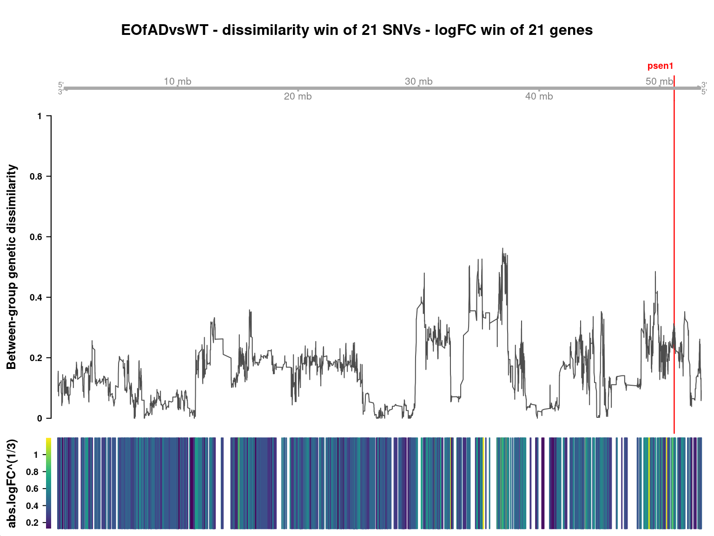
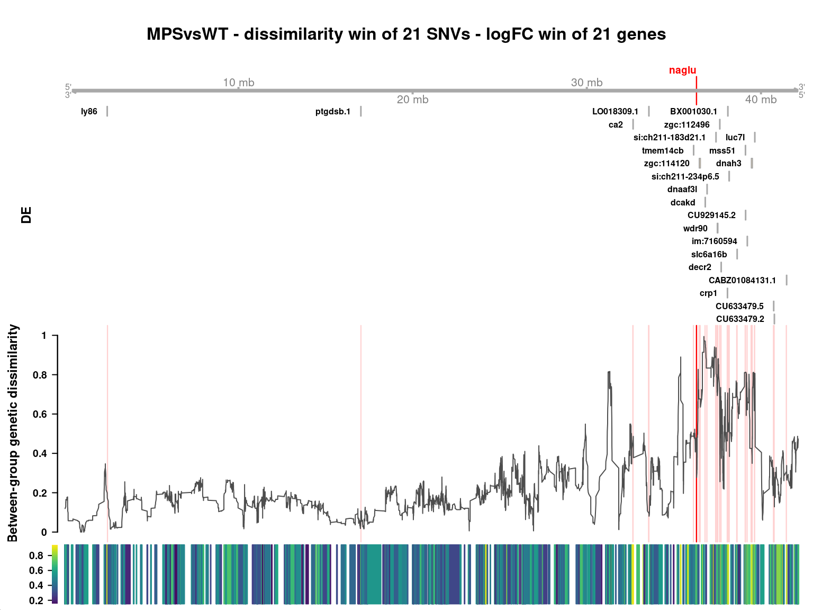

suppressPackageStartupMessages({
## Common
library(tidyverse)
library(magrittr)
library(future.apply)
library(here)
library(AnnotationHub)
library(purrr)
library(scales)
library(kableExtra)
library(tictoc)
library(ggrepel)
library(RColorBrewer)
library(ggpubr)
library(pander)
library(rmarkdown)
## Project specific
library(VariantAnnotation)
library(Gviz)
library(zoo)
})if (interactive()) setwd(here::here())
theme_set(theme_bw())
cores <- availableCores() - 1source("~/bioinformatics/bioToolkit/lbFuncs.R")## Choose either local or remote project directory
# projDir <- here()
projDir <- "/hpcfs/users/a1647910/211130_Q96K97del_A603fs"options(ucscChromosomeNames = FALSE)drChrs <- seq(1:25)ah <- AnnotationHub() %>%
subset(species == "Danio rerio") %>%
subset(rdataclass == "EnsDb")
ensDb <- ah[["AH83189"]] ## Ens101
genes <- genes(ensDb, filter = SeqNameFilter(drChrs))
mcols(genes) <- mcols(genes)[
c("gene_id", "gene_name", "gene_biotype", "entrezid")
]
exons <- exonsBy(ensDb, by = "gene", filter = SeqNameFilter(drChrs))An EnsDb object for Ensembl release 101 was accessed and gene and exon annotation information was extracted.
metadata <- read_csv(here("files/samples.csv")) %>%
## We need some sample aliases that follow R naming conventions
mutate(
alias = case_when(
genotype == "WT" ~ paste0("WT_", sample),
genotype == "EOfAD-like" ~ paste0("fAD_", sample),
genotype == "MPS-IIIB" ~ paste0("MPS_", sample),
),
genotype = factor(genotype, levels = c("WT", "EOfAD-like", "MPS-IIIB")),
group = genotype
) %>%
dplyr::arrange(genotype) %>%
dplyr::select(sample, genotype, alias, everything())
genoCols <- metadata$genotype %>%
levels() %>%
length() %>%
brewer.pal("Set1") %>%
setNames(levels(metadata$genotype))
compCols <- genoCols[2:3]samples_byGeno <- metadata %>%
split(f = .$genotype) %>%
sapply(function(x){
pull(x, sample)
}, simplify = FALSE)topDE <- readRDS(here("files/topTables.Rds"))deGenes <- sapply(topDE, dplyr::filter, DE, simplify = FALSE)vcf_file <- file.path(
"/hpcfs/users/a1647910/211130_Q96K97del_A603fs",
"analysis-variants/results/09_variants/6_select/all_samples.vcf.gz"
)
svp <- ScanVcfParam(info = "", geno = c("GT", "GQ"))
vcf <- suppressWarnings({
readVcf(vcf_file, param = svp)
})gr <- rowRanges(vcf)
mcols(gr) <- NULL
gr <- gr %>%
as.data.frame() %>%
droplevels() %>%
GRanges()unphase_GTs <- function(x){
str_replace(x, "\\|", "\\/")
}
gt <- geno(vcf)$GT %>%
as.data.frame() %>%
mutate(across(everything(), unphase_GTs))allele_file <- file.path(here(), "files", "allele_stats.Rds")## Takes 15-20 mins to run so .Rds saved for convenience
if (!file.exists(allele_file)) {
allele_stats <- lapply(samples_byGeno, function(samples){
apply(gt[,samples], 1, function(genos){
alleles <- genos %>%
as.character() %>%
str_split("/") %>%
unlist()
n_called <- sum(alleles != ".")
n_nocall <- sum(alleles == ".")
n_0 <- sum(alleles == "0")
n_1 <- sum(alleles == "1")
n_2 <- sum(alleles == "2")
n_3 <- sum(alleles == "3")
tibble(
n_called = n_called,
n_nocall = n_nocall,
n_0 = n_0,
n_1 = n_1,
n_2 = n_2,
n_3 = n_3,
)
}) %>%
bind_rows()
})
saveRDS(object = allele_stats, file = allele_file)
} else {
allele_stats <- readRDS(allele_file)
}allele_props <- lapply(allele_stats, function(x){
x %>%
mutate(
prop_ref = ifelse(n_called > n_nocall, n_0 / n_called, NA),
prop_called = n_called / (n_called + n_nocall)
)
})diss_win <- 51
alleleDiss <- lapply(
list(
allele_props[c("EOfAD-like", "WT")],
allele_props[c("MPS-IIIB", "WT")]
),
function(props){
diss <- gr
diss$comp <- abs(props[[1]]$prop_ref - props[[2]]$prop_ref)
diss$qual_ave <- (props[[1]]$prop_called + props[[2]]$prop_called) / 2
diss <- as_tibble(diss) %>%
dplyr::filter(!is.na(comp)) %>%
split(f = .$seqnames) %>%
lapply(function(chr){
dplyr::mutate(
chr,
comp_rollmean = rollmean(comp, k = diss_win, fill = NA),
qual_rollmean = rollmean(qual_ave, k = diss_win, fill = NA),
) %>%
dplyr::select(-c(comp, qual_ave))
}) %>%
bind_rows() %>%
GRanges()
}
) %>%
set_names(c("EOfAD-like", "MPS-IIIB"))lfc_win <- 21
lfc <- lapply(topDE, function(x){
x %>%
dplyr::select(
# Don't include strand because allelic differences between groups is consistent between strands
gene_id, gene_name, logFC, seqnames = chromosome, start, end, width
) %>%
dplyr::filter(seqnames %in% drChrs) %>%
mutate(abs.logFC = abs(logFC)) %>%
split(f = .$seqnames) %>%
lapply(function(chr){
mutate(
chr,
lfc_rollmean = rollmean(abs.logFC, k = lfc_win, fill = NA)
)
}) %>%
bind_rows() %>%
GRanges()
})plot_alleleDiss <- function(
chr, genes,
diss, diss_win, diss_type, diss_trans = 1,
lfc, lfc_win, lfc_type, lfc_trans = 1,
title
){
axis_track <- GenomeAxisTrack(add53=TRUE)
gene_track <- genes %>%
plyranges::filter(seqnames == chr) %>%
plyranges::mutate(symbol = gene_name) %>%
GeneRegionTrack(
name = "Genes",
transcriptAnnotation = "symbol",
showTranscriptId = TRUE,
fontcolor.group = 1,
cex.group = 0.5,
rotation.group = 0,
size = 0.5
)
diss_track <- diss[,"comp_rollmean"] %>%
plyranges::filter(seqnames == chr) %>%
plyranges::mutate(comp_rollmean = comp_rollmean^(diss_trans)) %>%
DataTrack(
type = diss_type,
name = "Allelic dissimilarity",
window = -1,
windowSize = 1
)
lfc_track <- lfc[,"lfc_rollmean"] %>%
plyranges::filter(seqnames == chr) %>%
plyranges::mutate(lfc_rollmean = lfc_rollmean^(diss_trans)) %>%
DataTrack(
type = lfc_type,
name = "Absolute logFC",
window = -1,
windowSize = 1,
showAxis = FALSE
)
plotTracks(
list(axis_track, gene_track, diss_track, lfc_track),
main = title,
cex.main = 1,
background.panel = "#FFFEDB",
background.title = "#814A00"
)
}chr <- "17"
plot_alleleDiss(
chr = chr, genes = genes[deGenes[[1]]$gene_id],
diss = alleleDiss[[1]], diss_win = diss_win, diss_type = "l", diss_trans = 1/3,
lfc = lfc[[1]], lfc_win = lfc_win, lfc_type = "heatmap", lfc_trans = 1/3,
title = paste0(
"EOfAD-like vs WT",
" - chr ", chr,
" - elastic dissimilarity window of ", diss_win, " SNVs",
" - elastic logFC window of ", lfc_win, " genes"
)
)
chr <- "24"
plot_alleleDiss(
chr = chr, genes = genes[deGenes[[2]]$gene_id],
diss = alleleDiss[[2]], diss_win = diss_win, diss_type = "l", diss_trans = 1/3,
lfc = lfc[[2]], lfc_win = lfc_win, lfc_type = "heatmap", lfc_trans = 1/3,
title = paste0(
"MPS-IIIB vs WT",
" - chr ", chr,
" - elastic dissimilarity window of ", diss_win, " SNVs",
" - elastic logFC window of ", lfc_win, " genes"
)
)
Circos plot
Look at regulatory TFT datasets
Try quasi likelihood for DE testing
Give a summary of window sizes
Look at the clustered DE genes near naglu - exclude naglu and see whether - Plot all the genes belonging to the gene set on variation plot